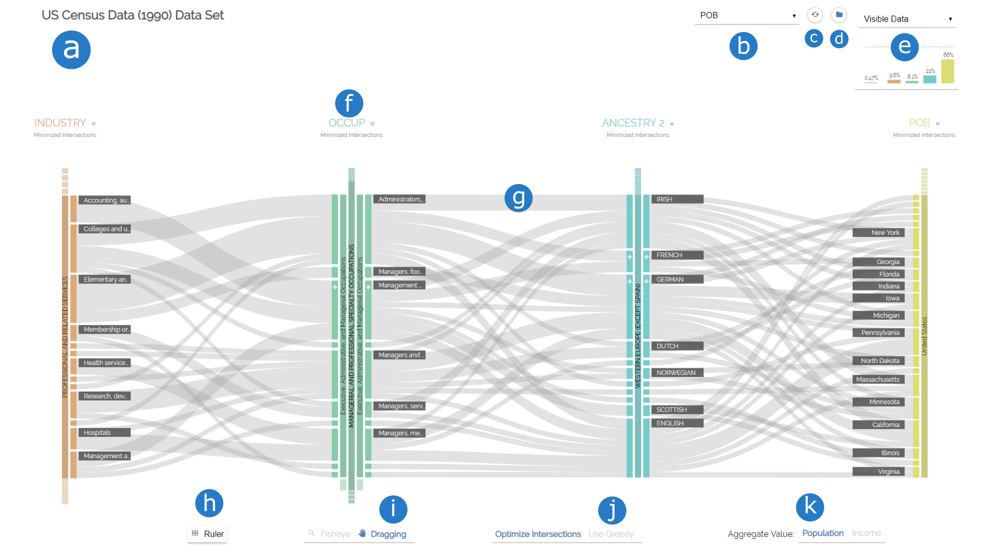

Features
Quick Introduction
Stable Release
Includes all features as proposed in our paper and as listed above.
Experimental Features
Expanding the functionality of Parallel Hierarchies with new features like multiple hierarchy selection per dimenion, an accordion mode to change width of categories and more animations between interactions.
Note: Does not allow minimization of ribbon intersections (yet).
Tutorial
Getting Started
To follow this tutorial, you can either use the live demo, or use a local version cloned from our GitHub repository.
When launching the visualization, you will be presented with a list of datsasets to choose from. To follow this tutorial, click-on "Yeast Gene Ontology".
After selecting the dataset, the view will be generated from the data. A toolbar is positioned on top and the actual visualization below. You can interact with both the toolbar and the visualization, but we will come to that later on.
The View Components
Below you can see a screenshot from the visualization after selecting the Yeast Gene Ontology dataset. Let's have a look at the components of the visualization and how they are called:
- title of the dataset
- dropdown menu to add new dimensions
- add a horizontal guideline for vertical height analysis
- switch cursor interaction
- configure ribbon minimization
- pick a dataset
- reset the visualization to default values
- Column chart
- a dimension
- a ribbon between two neighboring dimensions
Adding/Removing Dimensions
You can now investigate the dataset. The first thing you might want to do is adding a new dimension to the visualization. To do so, click on the dropdown menu on the top of the screen that says "add dimension..." and select "Locus". An instance of the "Locus" dimension will now appear on the right side of the visualziation.
You can now see the interconnections between three facets of the dataset as well as the individual values of each dimension. Move your mouse over any category to get more insights. Four things happen:
- A tooltip appears that gives you detailed information on the highlighted category.
- All categories sharing at least one of the items represented by the highlighted category will be rendered darker than others.
- All ribbons that do not share any of the items will fade out.
- All ribbons that do share items will indicate the percentage by a darker ribbon on top.
Now, add the dimension called "Strand". Whoops, we do not actually need that one, so let us delete it from the view. To do so, click the cross next to the name "Strand" in the header of the dimension.
Rearranging Dimensions
We now want to exlpore how the Locus chromosomes of the Locus dimension are interconnected to both Cellular Components and Biological Processes. In order to do this, we need to rearrange the dimensions and put the Locus dimension in between the other two. Drag the "Locus" name to the left, until the Biological Process dimension switches its position and drop it in place.
You can now explore the cross-tabulation between Locus to it's neighboring dimensions.
Drilling down and Rolling up hierarchical categories
You may have noticed the + symbols on some of the categories. These indicate hierarchies in the dataset. This is Parallel Hierarchies after all, so let's find out more about those hierarchies, shall we? Click on the rectangle of the "cell part" category of the "Cellular Component" dimension.
The visualization changes. Notice how the cell part category is now much bigger than before. It's name is rendered sideways on top of the rectangle. New categories appeared to the right of that category. We call this the drill-down operation. Now, let's drill-down further into the hierarchy of the cell part category by clicking "intracellular part" and then "cytoplasmic part". Notice how on each level, a new ancestor category appears slightly smaller than it's parent.
Notice also that we can not drill-down further into this category. We have reached a dead end. In order to get back to higher levels of hierarchy, click on any of the ancestor categories to make them the working category. We call this the roll-up operation. Roll-up the cellular part hierarchy to reach the root by clicking on the "cellular part" ancestor category.
Let us investigate the Locus dimension a bit more. Drill-down into the Locus dimension by clicking on any of the chromosome categories. Look at all those genes that are now visible. That's too many to work with, so let's reduce their numbers. Drill-down into "localization" > "establishment of localization" > "transport" on the Biological Process dimension on the right. Notice how on every level, the number of visible Genes reduces, because categories which do not share any items active on all other dimensions have a height of 0.
Category Interaction
You will notice how some categories in the Locus dimension do not have a label. The reason for this is that Parallel Hierarchies tries to keep the view as clean as possible by hiding labels of categories that are smaller than the labels themselves. We could use the tooltip to have a look at each category individually, but that is tiresome. Instead, let's switch our interaction mode from "Dragging" to "Fisheye" in the toolbar
Now, if you move your mouse closer to the gene categories, their labels will appear. Also, Categories in a certain radius will be moved away to give more space to the ones in focus.
You are now familiar with the most important features of Parallel Hierarchies. But what do the other buttons do? Try it out for yourself or watch our in-depth video below.
In-Depth Video Tutorial
Use your own data
Import into experimental version
The quickest way to use your own data is to use the experimental version data import feature. First, visit the website and click the "Use your own Dataset" option.
- Click the "Choose File" button and pick the CSV file from your disk (make sure the data in your CSV file meets the requirements).
- In the "Aggregate Dimension" field, enter the exact name of the dimension that contains numerical values, which will be aggregated and represented by ribbon and category heights.
-
The last step is to define the hierarchies in your data one-by-one. In the "Label" field, choose any string that will be the name of the hierarchical dimension. Assuming your data is structured according to the requirements, enter the exact names of the dimensions making up a hierarchy, seperating each level by a comma.
For example, if your hierarchy is "country" > "state" > "region" > "city" > "street", enter "country, state, region, city, street".
- Afterwards, click the "add" button to store the hierarchy.
- When you have stored all hierarchies in the list, click the "Start" button to launch the application with your own dataset.
Using your own schema
This assumes you have a CSV file with your items and a JSON file containting you schema in accordance with the requirements and a local clone of the github project ready to go.
- In the project directory, open src/app.js in a text editor or IDE.
- In the
CONFIGURATIONSobject, create a new property of type object with any name you like. This name will be used in the dropdown list when launching the application. -
Assign the
schemaURIanditemsURIproperties to it, so that your entry looks something like this:- 'myCustomDataset': {
-
- schemaURI: './link/to/schema.json',
- itemsURI: './link/to/items.csv'
- }
-
In the "index.html" file, add a new line right after line 59 that looks similar to this one:
- <li>
-
- <button class="preset" value="myCustomDataset">
-
- <i class="material-icons">folder_open</i>
- My Custom Dataset
- </button>
- </li>
- Launch the application and visit localhost:8080.
- Choose your own dataset from the list.
Documentation
Dimension
Represents a single facet of the dataset.

The top part of a dimension consists of a header component. Here you will see the name of the dimension, which has the same color as the categories further down. On the right side of the name, you will see an 'X' marker, which you can click to delete the dimension from the view.
Placed below the name is the current ordering of the dimension. This can take one of three values: "Minimized Intersections" (order according to the minimization strategy), "Value" (sorted by aggregate value) and "Description" (sorted by names of categories). Click on the current ordering to select another strategy.
The body is each dimension consists of the categories found in the data. A category is a single value that a set of items my contain for the individual dimension. Each dimension is assigned a specific color to quickly seperate them from each other. Both the dimension name and the categories have this particular color. You can find more information on the categories below.
You can rearrange dimensions horizontally by dragging the name of the dimension to the left or right. Dimensions switch places if you move them at least half-way closer to each other.
Category
Represents a (hierarchical) value of a facet of the dataset.
A category is a single value that a set of items my contain for the individual dimension. It is represented as a rectangle of fixed width. The height of each category represents the total sum of values of items that have the specific value. The bigger the height, the bigger the sum of values. If a category has a certain height, a label with its name will be placed on either the left or right side of the category. You can get detailed information on a category via the tooltip on mouse-over.
A category may be hierarchical, which means that we can drill down into its subcategories. These subcategories are derived from the items in the CSV file and the hierarchies from the schema. Whether or not a category is hierarchical is indicated by a small + Symbol the at the upper end of the category. You can click a category to drill into its hierarchy
Hierarchies in a category are represented by a simplified icicle tree that grows to the left and right side of a dimension. Only the path to the current level is shown in proportion. All other categories on lower levels are only indicated as small rectangles above and below an active ancestor. You can click an ancestor to roll up the hierarchy to its level. You can also click on inactive ancestors to make them the working category.
Ribbon
Visualizes interconnections between two categories of two neighboring dimensions.

A ribbon displays the interconnection between categories of neighboring dimensions. It is represented as a horizontal bezier path. The start and end of this path are the connected categories. The height of this path represents the total sum of values of items that share both the source and target categories in their specific dimensions. You can get detailed information on a ribbon via the tooltip on mouse-over.
If you mouse-over either a ribbon or a category, the set of items represented by the visual element will be highlighted. All categories sharing at least one of the items in that set will get a darker color. If a ribbon does not share any of the items in that set, it will be rendered more transparent. For ribbons that do share at least one of the items, a second path will show the percentage of the highlighted items to the overall items of the ribbon. This secondary ribbon is of darker color and aligned at the bottom of the primary ribbon, similar to stacked bar charts.
Cursor interaction
Interaction technique for categories.
You can choose between two interactions modes when pointing the cursor on a category: The drag interaction, which lets you rearrange categories vertically, and the fisheye view mode.
If you activate the latter, you will notice that the spacing between categories increases in a certain radius, allowing more space between categories closest to the cursor. Also, labels for all categories will be displayed, regardless of their size. This is especially helpful when working with a large set of small categories, since labels can be read without the tooltip.
Ribbon minimization
Optional minimization of ribbon intersections to reduce clutter.
To enable minimization, click the "Minmize intersections" option. This will toggle the use of the barycentric method to calculate a new category ordering that minimizes ribbon intersections. A maximum of 10 iterations will be run.
To further improve the minimization result, you can also click the "Use Greedy" option. The Greedy optimization will use the result of the barycentric method and an additional minimization step that reorders categories greedily. Notice that this will not always yield any changes of the visualization, since the greedy approach is not guaranteed to find better orderings.
Column chart
Displays the amount of data filtered by the hierarchy queries on each dimension.
Drilling down a category in Parallel Hierarchies formulates a query on the containing dimension: "Find all categories in dimension A that are children of the hierarchy a1 > a2 > ...". For each individual dimension, one of these queries can be formulated. The column chart visualizes the effect that each individual query has on the overall amount of data that is visisble.
The grey bar on the very left shows how many items of the dataset are currently visible (or filtered, depending on the mode selected in the dropdown menu above). Each colored bar right to that one represents the queries per dimension. The order the bars is the same as the order of dimensions in the visualization.
Data Schema
CSV file
Let's assume, you want to represent the following hierarchical dimension in Parallel Hierarchies:
This is an easy task to do in JSON, since we can place objects inside other objects, creating a tree structure. In CSV files on the other hand, we need to flatten the hierarchy.
The first thing we need to do is find the longest path in our hierarchy. In our example, it's the path
"Dimension A" > "Category A4" > "Category A4.1" > "Categry A4.1.1" or "Category A4.1.2"
We then need to get the length of that path, excluding the root, which in our case means it is 3.
So for every item, instead of just storing the value for Dimension A, we need to store the path along the hierarchy to this category as seperate fields in the data.
We also need to make sure to store deeper levels as empty.
Example
If an item in our data looked like this:
- {
-
- "dimension A": "category A4.1.2",
- "value": 100
- }
- {
-
- "dimensionA_Level0": "category A4",
- "dimensionA_Level1": "category A4.1",
- "dimensionA_Level2": "category A4.1.2",
- "value": 100
- }
Respectively, the item
- {
-
- "dimension A": "category A1.2",
- "value": 40
- }
- {
-
- "dimensionA_Level0": "category A1",
- "dimensionA_Level1": "category A1.2",
- "dimensionA_Level2": "",
- "value": 40
- }
Therefore, our CSV file containing those two items in the end would look like this:
- dimensionA_Level0,dimensionA_Level1,dimensionA_Level2,value
- category A4,category A4.1,category A4.1.2,100
- category A1,category A1.2,,40
JSON file
In addition to that we need to tell Parallel Hierarchies how the levels of our hierarchical dimensions are named, as well as some other metadata. We do this in a seperate JSON file with the following structure:
- {
-
- "title": {string}, // name of our dataset
- "unit": {string}, // name of the unit our data ($, km, kg, people,...)
- "timestamps": {Array of strings}, // list of dimensions with quantitative data
- "hierarchies": [
-
- { // one object per hierarchy
-
- "label": {string}, // name for our hierarchical data
- "levels": {Array of strings} // ordered list of dimension levels
- }
- ]
- }
Example
Following our example from the CSV file above, we would need to create a file looking like this:
- {
-
- "title": "Example Dataset",
- "unit": "meters",
- "timestamps": ["value"],
- "hierarchies": [
-
- {
-
- "label": "Hierarchy A",
- "levels": ["dimensionA_Level0", "dimensionA_Level1", "dimensionA_Level2"]
- }
- ]
- }
Both the CSV and the JSON file are then passed to an instace of ParallelHierarchies (example in the src/app.js)